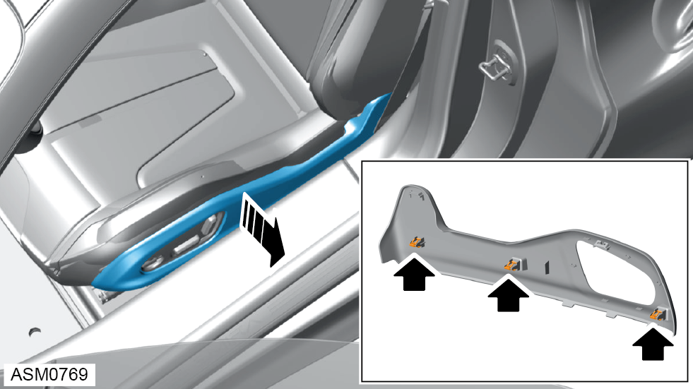
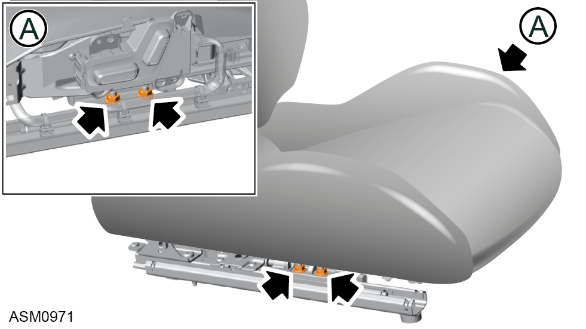

Seat Driver
Print
Operation Code: 13.02.01-02
Procedure Introduction
NOTE: If renewing drivers seat due to side airbag deployment, the ECU - airbag control must also be renewed, refer to procedure.
Removal
- Open door.

- Carefully pull seat side trim to disengage clips (x3) securing trim to seat.
- Slide off cable ties (x4) from trim panel.
NOTE: Do not cut cable ties.
- Remove trim.
- Remove M10x25 bolt, spacer and washer securing seat belt to seat. Torque 45 Nm.
NOTE: Record fitted position of spacer and washer.
- Move seat to fully back position.
- Remove M10x30 bolts (x2) securing front of seat rail to vehicle. Torque 47 Nm.
NOTE: Retain spacers (x2) under seat rails.
- Move seat to fully forward position.
- Move seat backrest to fully forward position.
- Remove M10x30 bolts (x2) securing rear of seat rail to vehicle. Torque 47 Nm.
NOTE: Retain spacers (x2) under seat rails.
- Fold seat to fully forward position.
- Tilt seat backwards to access electrical connectors.
- Disconnect harness connectors (x2) from drivers seat.
- Remove drivers seat.
 CAUTION: Take care to not damage components or body work while removing the seat.
CAUTION: Take care to not damage components or body work while removing the seat.
NOTE: Seat should be removed with the rails coming out first.
Do not carry out further disassembly if removing for access only.
- Remove bolt, spacer and washer securing seat belt buckle to seat.
NOTE: Record fitted position of spacer and washer.
NOTE: Make sure that the seat belt buckle tang fits into the seat frame slot.
- Remove seat belt buckle.

- Remove nuts (x4) securing seat rail to seat.
- Remove bolts (x2) securing seat rail to seat.
- Remove seat rail.
Installation
- Installation is the reverse of removal procedure.